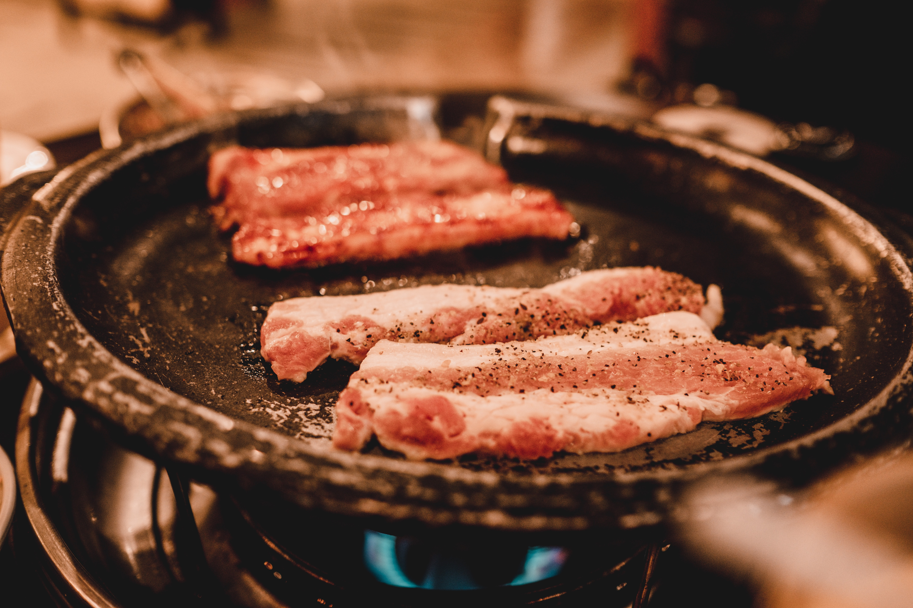

Bulgogi (불고기) - thinly sliced or shredded beef marinated in soy sauce, sesame oil, garlic, sugar, scallions, and black pepper, cooked on a grill (sometimes at the table). Bulgogi literally means "fire meat." Variations include pork (dwaeji bulgogi, 돼지불고기), chicken (dak bulgogi 닭불고기), or squid (ojingeo bulgogi, 오징어불고기). Galbi (갈비) - pork or beef ribs, cooked on a metal plate over charcoal in the centre of the table. The meat is sliced thicker than bulgogi. It is often called "Korean barbecue" along with bulgogi, and can be seasoned or unseasoned. Dak galbi (닭갈비) - stir-fry marinated diced chicken in a gochujang-based sauce, and sliced cabbage, sweet potato, scallions, onions and tteok.[1] Samgyeopsal (삼겹살) - unseasoned pork belly, served in the same fashion as galbi. Sometimes cooked on a grill with kimchi together at either side. Commonly grilled with garlic and onions, dipped in sesame oil and salt mixture and wrapped with ssamjang in lettuce . Makchang gui (막창구이) - grilled pork large intestines prepared like samgyeopsal and galbi, and often served with a light doenjang sauce and chopped scallions. It is very popular in Daegu and the surrounding Gyeongsang region. Gobchang gui (곱창구이) - similar to makchang except prepared from the small intestines of pork (or ox) Saengseon gui (생선구이) - grilled fish Seokhwa gui or jogae gui (석화구이 or 조개구이) - grilled shellfish Deodeok gui (더덕구이) - grilled deodeok (Codonopsis lanceolata; 더덕) roots Beoseot gui (버섯구이) - any kind of grilled mushroom Gim gui or guun gim (김구이 or 구운 김) - grilled dry laver (or gim)
